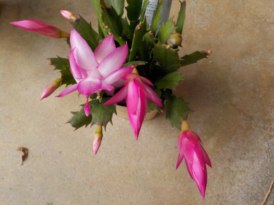
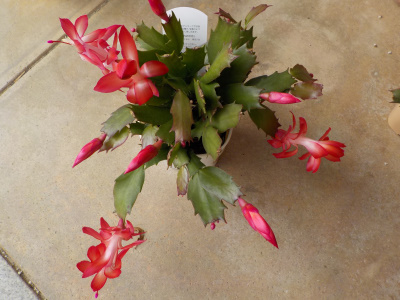
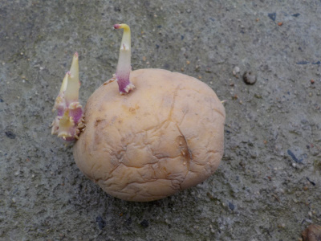
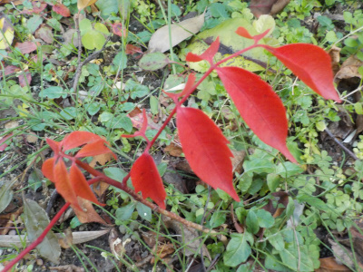
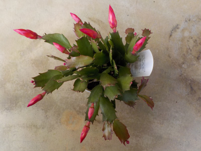

遊びで植物を育てよう
2018/12/24
ジャコバサボテンが咲きました。
思ってたより花が大きかったです。


派手でいいんですが、なんかバランスが悪い感じがします。
もっと株が大きくなるといいかもしれません。
【ページTOP】 【12月TOP】
【園芸TOP】
2018/12/24
じゃがいもの芽を取りました。
じゃがいもの芽が大きくなっていました。

芽を取る作業をしました。
今年はいつもよりじゃがいもを多く食べてるようで、残りが少ない気がする。
【ページTOP】 【12月TOP】
【園芸TOP】
2018/12/02
庭で紅葉を見つけました。
何の木かわからないですが、綺麗に赤くなっていました。

これが一面あったら見栄えがいいんだろうなーと思いますが、すぐに葉っぱを落としちゃうんだろうなー。
紅葉は出かけて見るのが一番いいかな。
【ページTOP】 【12月TOP】
【園芸TOP】
2018/12/09
ジャコバサボテンがもうすぐ咲きそうです。
半額で買ったジャコバサボテンですが、すくすくと育ちました。

つぼみの状態でも色があるので綺麗ですね。
しばらく楽しめそうです。
【ページTOP】 【12月TOP】
【園芸TOP】
過去の日記
【2017年12月の日記】
【2016年12月の日記】
【2015年12月の日記】
【2014年12月の日記】
【2013年12月の日記】
【ページTOP】
【12月TOP】
【園芸TOP】
畑仕事じゃないよ。
【おいしいものを食べよう。】【しっかり寝よう。】
【ソロ活をしよう!】【季節感のあることをしよう。】【動画視聴はほどほどに。】【当サイトの全てのコンテンツは無断転載禁止です。】